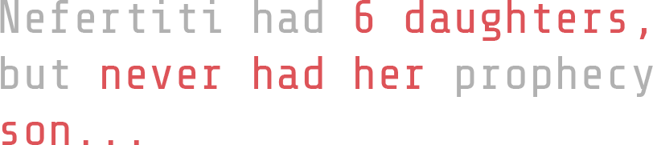
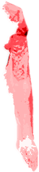

Queen Nefertiti is renowned for her exemplary leadership and deep compassion for her people. Alongside her husband Akhenaton, she worshipped the Sun Disk God, Aton, believed to bestow wisdom and scripture upon them. Nefertiti was to give birth to a son, destined to become a king leading an army of peaceful resistance and justice, spreading a mission of harmony across the land. Depicted in numerous statues with missing arms, symbolizing the sacrifice of her own power for the sake of her son's faith and prosperity.
Nefertiti's sexuality was emphasized through her exaggerated feminine physique and the elegance of her linen attire. This aspect was coupled with her prolific fertility, represented by the presence of her six princesses. These characteristics made her status as a living embodiment of the fertility goddess. The marking on Nefertiti's stomach symbolized her profound realization that she would never fulfill the prophecy of bearing a son. It was seen as a curse, casting a shadow of doom over her from the very beginning.
Nefertiti endured tormenting psychic assaults, never knowing when her visions would materialize, yet their reality was unmistakable to those close to her. In the iconic bust depicting her, Nefertiti is with one missing eye, her prophecies grew blurry, causing widespread concern. The void in her forehead represents her tragic end, as she took her own life, falling down a hole by the longing for the son she so desperately desired, a yearning that consumed her existence.
DETAILS
BULLET HOLE
MISSING ARM
THE SEED
>CLICK on red highlighted body parts to READ MORE<